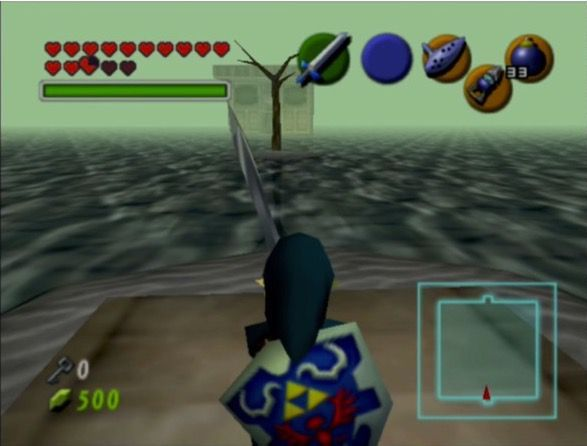
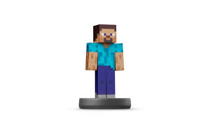
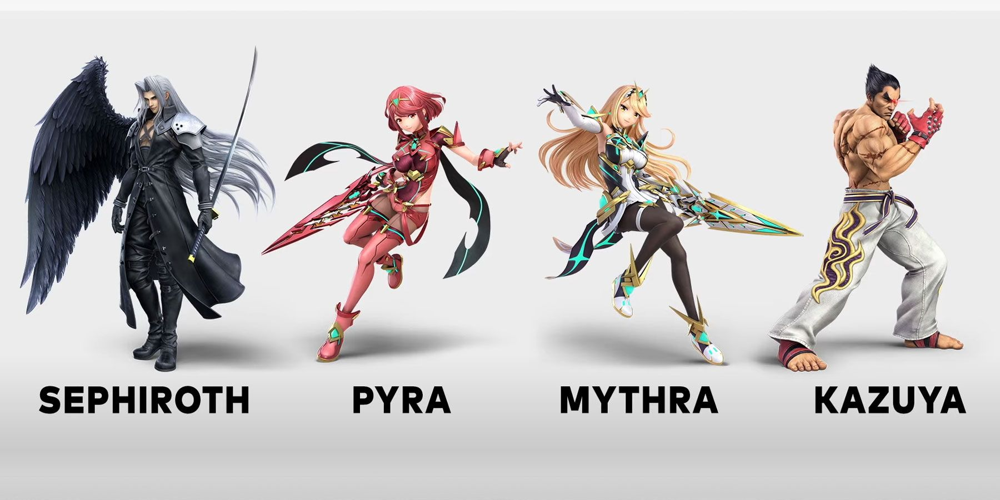

The Switch Online Expansion Pack has had a... Foggy... problem. The fog in the emulator is more clear in the emulator than on the original system. Not a lot of games are affected meaningfully by this, but you can see a side by side for Ocarina of Time:
| Fog on Switch vs Fog on N64 | |
|---|---|
| Nintendo 64 | Nintendo Switch |
|  | |
During the last Sakurai Presents Presentation, the final major update for Super Smash Bros. Ultimate was revealed, along with the future amiibo in the works. One Amiibo was missing though, the Sora Amiibo. In all likelyhood, it will exist, but we technically don't have conformation, and getting the rights for sora in smash likely took a lot of liscensing work on its own, so Sora may be the first fighter to never get an Amiibo.
 